Gallery
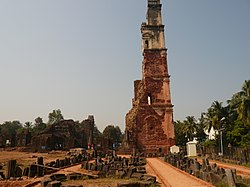
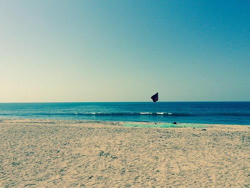
 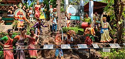
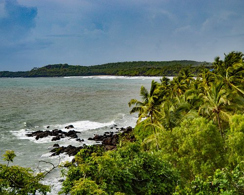
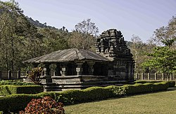
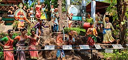
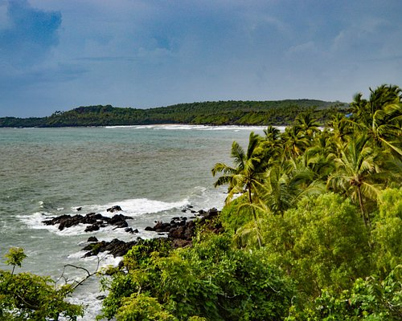
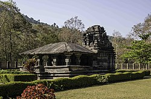
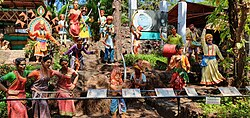
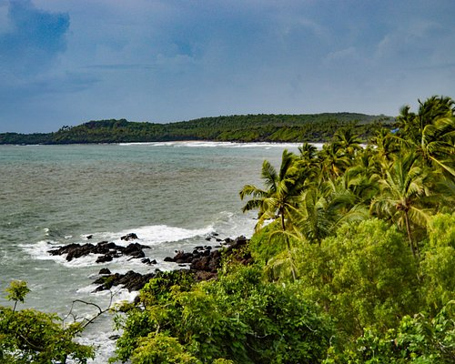
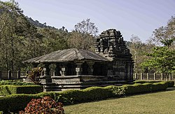
Explore. Respect. Preserve. Discover Goa’s lesser-known heritage under SDG 11.
This platform highlights Goa’s hidden temples, forts, forests, and heritage sites, promoting responsible tourism and preserving local culture while easing pressure on over-exploited destinations.
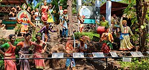
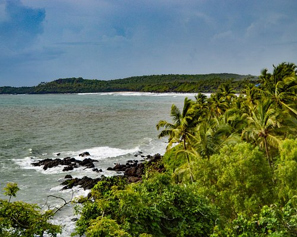
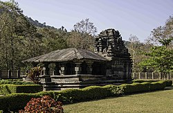